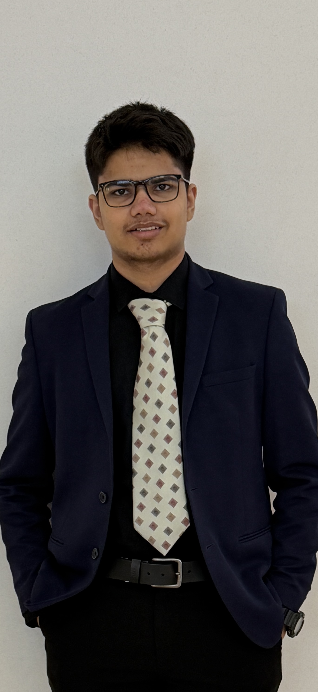

At an age when most students are still discovering their interests, I have dedicated myself to pursuing excellence across literature, entrepreneurship, research, and leadership with a singular belief: meaningful impact is created at the intersection of ideas, innovation, and execution.
My journey first gained recognition when my debut novel, The Mysterious Call, received the prestigious Aalekh Award and was formally honored by former Union Education Minister Dr. Ramesh Pokhriyal Nishank and Dr Kiran Bedi (IPS). The achievement was not merely a literary milestone—it represented the culmination of years spent developing the discipline to transform imagination into tangible work. Since then, my writing, research, and leadership pursuits have been guided by the same principle: creating outcomes that extend beyond personal accomplishment.
Alongside my literary work, I have earned national and international recognition through academic competitions, entrepreneurship initiatives, and innovation challenges. My achievements include national honors from INTACH, international distinctions in science and mathematics competitions, and success in entrepreneurship forums that encouraged me to explore how ideas can evolve into solutions with real-world value.
Beyond awards, I am deeply interested in solving complex problems. As an aspiring civil engineer, I am particularly fascinated by the challenges of urban infrastructure, sustainability, and resilient cities. My long-term goal is to combine rigorous technical expertise with entrepreneurial thinking to develop solutions capable of improving millions of lives. Whether through research, technology, public policy, or business leadership, I aspire to contribute to projects that create lasting societal impact.
I believe that exceptional achievement is rarely the result of talent alone. It is built through relentless curiosity, disciplined execution, and the willingness to pursue ambitious goals long before they appear attainable. These principles have shaped my journey so far and continue to guide my aspirations for the future.
I am not merely preparing for a career; I am preparing to build, lead, and create at a scale that matters.